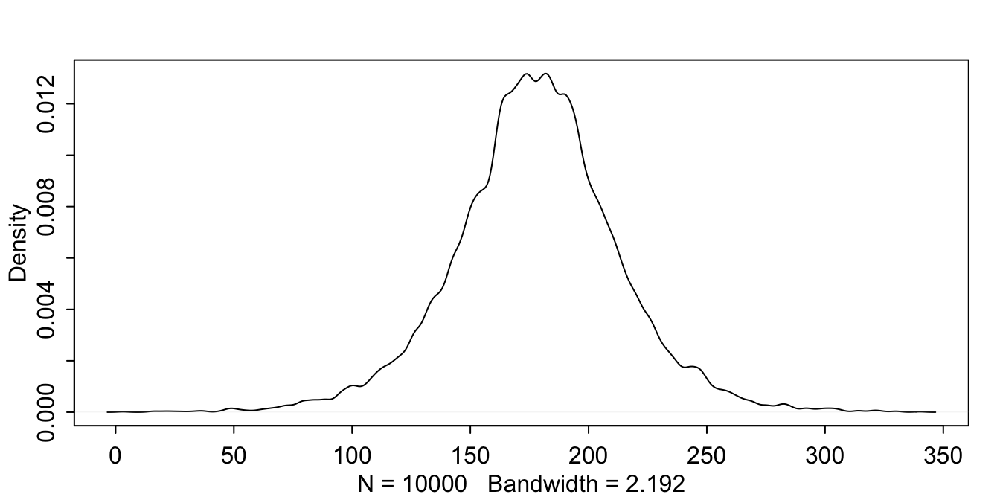
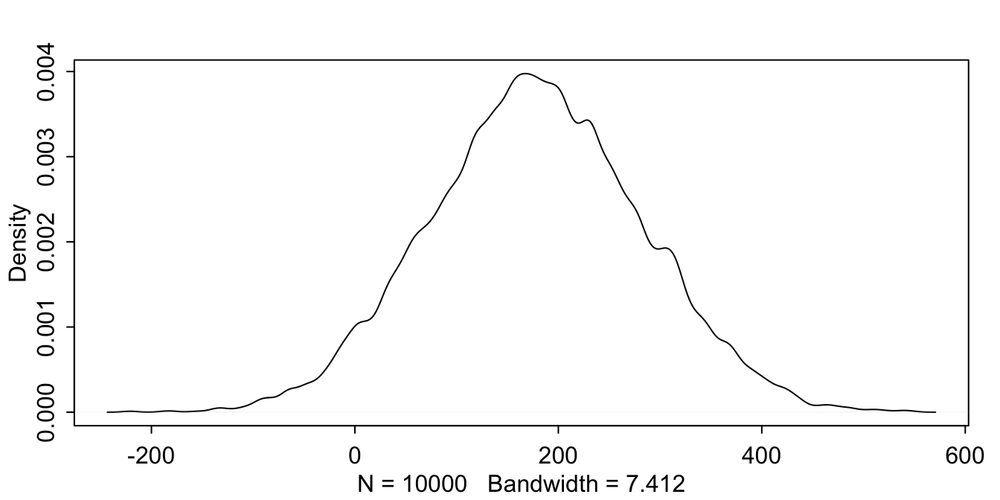
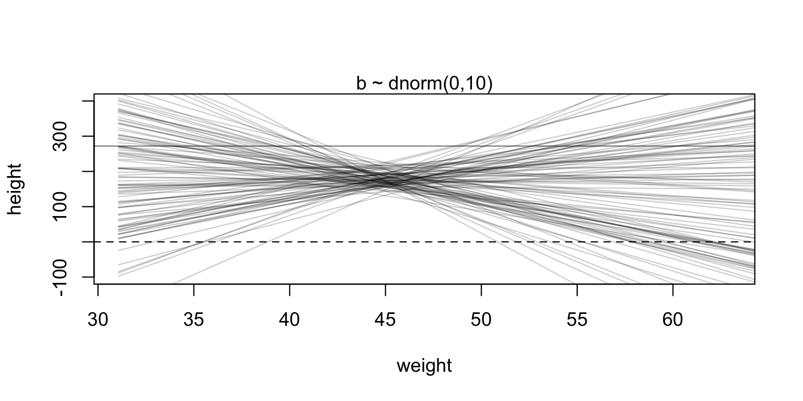
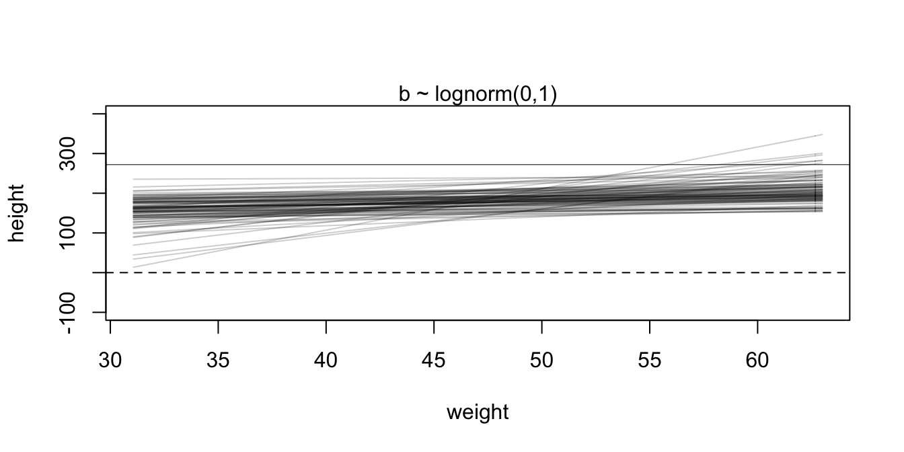

Learning Stan with Statistical Retinking
2021-07-17
Chapter 1 Geocentric Models
library(rethinking)
library(dplyr)
library(tidyr)
library(rstan)
library(ggplot2)
library(ggthemes)
library(gridExtra)
library(grid)
library(tidybayes)
library(tidyverse)
library(bayesplot)
library(splines)
library(purrr)
library(stringr)
library(brms)data(Howell1)
d <- Howell1
d2 <- d[ d$age >= 18 , ]1.1 Gaussian Model of Height
McElreath’s linear model is as follows:
\[h_i \sim \textrm{Normal} (\mu, \sigma)\\ \ \ \ \ \ \ \mu \sim \textrm{Normal(178, 20)}\\ \ \ \sigma \sim \textrm{Uniform(0,50)}\]
Before doing anything let’s visually understand what
\[\mu \sim \textrm{Normal(178, 20)}\]
means
curve(dnorm(x, 178, 20), from = 100, to=250) This is how a normal distribution with mean of 178 and standard deviation of 20 looks like. So we started doing something already.
This is how a normal distribution with mean of 178 and standard deviation of 20 looks like. So we started doing something already.
Now let’s visualise \[\sigma \sim \textrm{Uniform(0, 50)}\]
curve(dunif(x, 0, 50), from=-10, to=60)Everything looks cool so far. Now it’s time to simulate fake height numbers implied by these priors. What we are going to do is using ‘rnorm’ and ‘runif’ functions with the numbers given us by McElreath. prior_mu and prior_sigma are the random numbers generated for mu and sigma when we plug the numbers. prior_height_sim is again using rnorm, but this time rather than setting an arbitrary number for mean and sd parameters inside the rnorm, we are plugging the derived prior_mu and prior_sigma as mean and sd respectively.
then we plot it
prior_mu <- rnorm(1e4, 178, 20)
prior_sigma <- runif(1e4, 0, 50)
prior_height_sim <- rnorm(1e4, prior_mu, prior_sigma)
dens(prior_height_sim)
As you can see the resulting distribution of height is plausible. In order to see what happens under different prior description of the height, we this time tweak the standard deviation of prior mu \[\mu \sim \textrm{Normal(178, 100)}\] Let’s see what happens
prior_mu <- rnorm(1e4, 178, 100)
prior_height_sim <- rnorm(1e4, prior_mu, prior_sigma)
dens(prior_height_sim)
Oh my god! This is horrible. Uncertainty is good, however this doesn’t mean that we have to introduce this sort of ridiculous uncertainty into our models. We all know that there are no people around 400 cm tall. Moreover, this distribution also implies that some people have negative heights! Bad prior. Don’t use it.
Now it’s time to use magnificent Stan language for the first time. Fasten your seatbelts.
During the course of these notebooks I will write inline stan codes. I normally don’t do it this way. When working with stan, if you separate your scripts and stan files, then, someone else using pystan juliastan etc can easily plug and play with your models in their environments with minimum effort. Plus, it’s also more organized when your stan code is outside of your script.
1.1.1 Using Stan for the First Time
When using stan, at first it may seem daunting that you have to do lot of things manually. I understand and to a degree aggree that this is little bit uncomfortable. However, if you really wish to learn what sort of operations that are taken care of when you are using your ordinary statistics package, then, stan is perhaps the best way. Furthermore, even if you have no appetite for learning what’s happening under the hood when you are fitting models, it’s still essential that you have an idea about what goes beneath the surface. Every statistical modelling package or program make decisions on behalf of you. You may call them assumptions or whatever it pleases you. When you know about them, you can start modifying them for your purposes.
Stan accepts the data in list format. Whatever you are going to use inside your models must be represented here.
stan_data_4_1 <- list(N = NROW(d2),
height = d2$height)So, we have only two elements in this list. What are they?
N is the number of observations. We are telling stan program how many observations that it should expect.The height is the vector containing height data.
There two important points here
1) Naming is up to you. You can call it N or whatever you think it fits. However, once you name it here, you have to stick with that name inside the stan program. Don’t make changes on the fly. And pick names that you can easily remember. This may not seem to be a big issue to you right now. But when the models get complex, then your naming convention will help you. Lets call it clear names principle
2) As you can see, N is just a number. Why didn’t I just pass there the number? It’s related to strategic thinking. In real world applications, unlike these toy examples, the statistical analyses are so rarely linear processes. It doesn’t work in a way that you advance step by step and never return to previous steps. Rather, you try something out. Then you find some discrepancy and you go back to square number one and try different approach (further cleaning, transformation etc.) with your data. So, if you put a constant number there directly, then each time you modified your data you have to make sure that N is still up to date. ‘NROW(d2)’ makes this clear for you. We can call this one don’t hard code principle
//What this all means is:
//Dear golem,
data{
int<lower=1> N; // N is number of observations. I gave you this in the data.
vector[N] height; // Height is a vector containing N observations. This is also
//in the data
}
parameters{
real mu; // mu
real<lower=0, upper=50> sigma; //sigma
// I'll give details of them in the next block. Just recognize them for now.
}
model{
height ~ normal(mu, sigma); //height is normally distributed with mu and sigma
mu ~ normal(178, 20); //mu is also normally distributed and "I think" mean is
//around 178 and since "I think" 138 and 218 are kind of good candidates for
//being +-2 standard deviations boundary.
sigma ~ uniform(0,50);
//sigma is uniformly distributed and can take values between
// 0 and 50
}
// best regardsSo, in the comments part I also tried to outline what’s happening inside the stan model by keeping up with McElreath’s Golem analogy. Let’s move on with fitting it.
fit_4_1 <- sampling(model_4_1.stan,
stan_data_4_1,
iter=1000,
chains=2,
cores=4)print(fit_4_1)## Inference for Stan model: 027d8e5b047e6b17c3edb7d22b5b286a.
## 2 chains, each with iter=1000; warmup=500; thin=1;
## post-warmup draws per chain=500, total post-warmup draws=1000.
##
## mean se_mean sd 2.5% 25% 50% 75% 97.5% n_eff Rhat
## mu 154.59 0.01 0.41 153.81 154.31 154.59 154.87 155.39 828 1.00
## sigma 7.76 0.01 0.31 7.19 7.55 7.75 7.95 8.40 707 1.00
## lp__ -895.78 0.05 1.08 -898.45 -896.14 -895.45 -895.05 -894.77 497 1.01
##
## Samples were drawn using NUTS(diag_e) at Sat Jul 17 13:46:38 2021.
## For each parameter, n_eff is a crude measure of effective sample size,
## and Rhat is the potential scale reduction factor on split chains (at
## convergence, Rhat=1).So it was your first model using stan. Congrats!
1.2 Linear Prediction
Our next target, following the book is making use of weight variable to predict heights. Before doing so let’s start with plotting them together.
plot( d2$height ~ d2$weight )There’s an obvious relationship among those 2. Look how height gets bigger as weight gets bigger.
Let’s write down the model: \[h_i \sim \textrm{Normal}(\mu, \sigma) \\ \ \ \mu_i = \alpha + \beta_i(x_i - \bar{x})\\ \ \ \ \ \ \alpha \sim \textrm{Normal}(178, 20) \\ \ \ \beta \sim \textrm{Normal}(0, 10)\\ \ \ \ \sigma \sim \textrm{Uniform}(0,50)\]
Notice two things. There’s the new parameter \(\beta\).And this is multiplied by \(x_i -\bar{x}\). The latter is called centering. So let’s do that.
d2$weight_c <- d2$weight - mean(d2$weight)And prepare the stan data.
stan_data_4_3 <- list(N = NROW(d2),
height = d2$height,
weight_c = d2$weight_c)But maybe we are going too fast. Let’s talk about prior that we set for \(\beta\). Why did we set this? More importantly, do we know what does that imply? \(\beta\) is telling us about the effect. Is Normal(0,10) a good one? One way to know. Let’s plot it
N <- 100 # number of lines
a <- rnorm(N, 178, 20) # alpha
b <- rnorm(N, 0, 10) # beta
#plot them
plot(NULL, xlim=range(d2$weight), ylim = c(-100, 400), xlab = "weight", ylab = "height")
abline( h=0 , lty=2 ) # Embryo
abline( h=272 , lty=1 , lwd=0.5 ) # World's tallest person
mtext( "b ~ dnorm(0,10)" )
xbar <- mean(d2$weight)
for (i in 1:N ) curve(a[i] + b[i]*(x-xbar) ,
from = min(d2$weight), to=d2$height, add = TRUE,
col = col.alpha("black", 0.2))
This prior implies that there must be some people with negative weights. Also, from it’s standpoint, 30kg to 400cm decreases to -100cm when the weight gets 60. Not plausible at all. Feel free to try different priors. I’ll shoot one
N <- 100 # number of lines
a <- rnorm(N, 178, 20) # alpha
b <- rnorm(N, 0, 1.5) # beta
#plot them
plot(NULL, xlim=range(d2$weight), ylim = c(-100, 400), xlab = "weight", ylab = "height")
abline( h=0 , lty=2 ) # Embryo
abline( h=272 , lty=1 , lwd=0.5 ) # World's tallest person
mtext( "b ~ dnorm(0,1.5)" )
xbar <- mean(d2$weight)
for (i in 1:N ) curve(a[i] + b[i]*(x-xbar) ,
from = min(d2$weight), to=d2$height, add = TRUE,
col = col.alpha("black", 0.2))Not great, not terrible. Let’s continue with McElreath’s prior.
b <- rlnorm(N, 0, 1)
# plot the chunk above
plot(NULL, xlim=range(d2$weight) , ylim=c(-100,400) , xlab="weight" , ylab="height" )
abline( h=0 , lty=2 )
abline( h=272 , lty=1 , lwd=0.5 )
mtext( "b ~ lognorm(0,1)" )
xbar <- mean(d2$weight)
for ( i in 1:N ) curve( a[i] + b[i]*(x - xbar) ,
from=min(d2$weight) , to=max(d2$weight) , add=TRUE , col=col.alpha("black",0.2) )
data {
int<lower=1> N;
vector[N] height;
vector[N] weight_c;
}
parameters {
real alpha;
real beta;
real<lower=0,upper=50> sigma;
}
model {
vector[N] mu = alpha + beta * weight_c;
height~ normal(mu, sigma);
alpha ~ normal(178, 20);
beta ~ lognormal(0, 1);
sigma ~ uniform(0,50);
}
# fit
fit_4_3 <- sampling(model_4_3.stan, data = stan_data_4_3, iter = 1000, chains = 2, cores = 2)print(fit_4_3, probs = c(0.1, 0.5, 0.9))## Inference for Stan model: 1b47a5d1ac27ee76501545aa74cbaa76.
## 2 chains, each with iter=1000; warmup=500; thin=1;
## post-warmup draws per chain=500, total post-warmup draws=1000.
##
## mean se_mean sd 10% 50% 90% n_eff Rhat
## alpha 154.60 0.01 0.27 154.24 154.60 154.95 883 1
## beta 0.90 0.00 0.04 0.85 0.90 0.96 1023 1
## sigma 5.11 0.01 0.19 4.86 5.10 5.37 770 1
## lp__ -748.09 0.06 1.25 -749.90 -747.74 -746.84 485 1
##
## Samples were drawn using NUTS(diag_e) at Sat Jul 17 13:46:44 2021.
## For each parameter, n_eff is a crude measure of effective sample size,
## and Rhat is the potential scale reduction factor on split chains (at
## convergence, Rhat=1).Plotting the posterior against data
post <- as.data.frame(fit_4_3)
p <- ggplot() + lims(y = c(100, 200))
p1 <- p +
geom_point(data = d2,
aes(weight_c, height),
shape = 1, color = 'dodgerblue') +
geom_abline(intercept = mean(post$alpha), slope = mean(post$beta)) +
scale_x_continuous(n.breaks = 3,
breaks = c(-10, 0, 10),
labels = c(30, 45, 55))
p1Mean at 50
mu_at_50 <- post$alpha + post$beta*50
ggplot() + geom_density(aes(x=mu_at_50), color="dodgerblue" ) + labs(x = "mu | weight = 50") Wait a minute it’s not possible! What’s happening?
Wait a minute it’s not possible! What’s happening?
What happens is, we are betraying our own formula. Remember, our formula is calibrated for centered values of weight. If you forget about this and paste the raw weight number there, you’d get this this sort of wrong results.
So if we wish to learn height distribution at weight 50, what we have to do is simply find what centered value of weight that corresponds to raw weight of 50. The way to do is as follows.
mu_at_50 <- post$alpha + post$beta*(50 - mean(d2$weight))
ggplot() + geom_density(aes(x=mu_at_50), color="dodgerblue") + labs(x = "mu | weight = 50")
Let’s see the density in each weight. When simulating new weights we also have to provide centered version of them. Otherwise,as we saw above, what we get would be far off.
There are plenty of functions that would help you gather draws for the desired parameters from the posterior. At least for the first chapters of this book, I will try to do everything manually writing base R functions. The reason for this is making sure that we understand what’s going on inside the model.
What we are going to do now is, we’ll gather parameters from the posterior and simulate means and predictions manually by putting relevant those parameters from the posterior together in accordance with the formula.
f_mu <- function(x) post$alpha + post$beta * x
weight_new <- seq(25, 70)
weight_new_c <- weight_new - mean(weight_new)
mu <-
sapply(weight_new_c, f_mu) %>%
as.data.frame() %>%
rename_all(function(x) weight_new_c) %>%
mutate(iteration = row_number()) %>%
gather(weight, height, -iteration) %>%
group_by(weight) %>%
mutate(hpdi_l = HDInterval::hdi(height, credMass = 0.8)[1],
hpdi_h = HDInterval::hdi(height, credMass = 0.8)[2]) %>%
mutate(mu = mean(height)) %>%
ungroup() %>%
mutate(weight = as.integer(weight))What we did above is writing a function which simulates mu. If we recall the formula
\[ \mu_i = \alpha + \beta x_i \]
So when we put posterior \(\alpha\)s and \(\beta\) in this formula, we’ll get posterior \(\mu_i\). The new sequence ‘weight_new_c’ becomes the X. The rest is wrangling the data. Next, we plot it
p <- ggplot()
p1 <- p +
geom_point(data = mu %>% filter(iteration < 101),
aes(weight, height), alpha = .05, color = 'dodgerblue') +
labs(subtitle="Density at each weight") +
scale_x_continuous(n.breaks = 5,
breaks = c(-20, -10, 0, 10, 20),
labels = c( 30,40, 45, 50, 60))
p2 <- p +
geom_point(data = d2,
aes(weight_c, height), shape = 1, color = 'dodgerblue') +
geom_ribbon(data = mu,
aes(x = weight, ymin = hpdi_l, ymax = hpdi_h),
alpha = .1) +
geom_abline(data = post,
aes(intercept = mean(alpha), slope = mean(beta))) +
scale_x_continuous(n.breaks = 5,
breaks = c(-20, -10, 0, 10, 20),
labels = c( 30,40, 45, 50, 60)) +
labs(subtitle="HPDI Interval = 0.95")
grid.arrange(p1, p2, nrow = 1) Now we are continuing with prediction invervals.
sim_ht <-
sapply(weight_new_c,function(x) rnorm(NROW(post),
post$alpha + post$beta * x,
post$sigma)) %>%
as.data.frame() %>%
rename_all(function(x) weight_new_c)%>%
mutate(iteration = row_number()) %>%
gather(weight, height, -iteration) %>%
group_by(weight) %>%
mutate(pi_l = rethinking::PI(height, prob = 0.8)[1],
pi_h = rethinking::PI(height, prob = 0.8)[2]) %>%
ungroup() %>%
mutate(weight = as.integer(weight))p2 + geom_ribbon(data = sim_ht,
mapping = aes(x=weight, ymin=pi_l, ymax=pi_h), alpha = .3) +
labs(subtitle = 'Prediction Intervals = 0.95')Yes, too much work but but this was necessary
So far, we did:
- blueprinting for the golem when we spend time on visualising priors
- then we engineered the golem using stan according to that blueprint
- lastly, we reverse-engineered the golem to access the outputs(posterior)I know there are lot’s of packages that automates each of these processes. But if you can’t do these steps without the aid of any external package, then, I am sorry to tell you that you can’t debug your golem properly.
1.3 Curves From Lines
In this part we are going to build three models. First one is the linear one which we already know how to do. Second will be quadratic model. And, third will be the cubic model. For each of them, we are after the model fit, we are going to do reverse engineering for accessing the posterior distribution of the \(\mu\) manually. Lastly, we are going to combine all three in a plot to show differences.
1.3.1 Linear
It’s the same linear model. We are fitting it for the comparison plot.
d$weight_z <- (d$weight - mean(d$weight)) / sd(d$weight)stan_data_polynomial_sq <- list(N = NROW(d),
height = d$height,
weight_z = d$weight_z
)data {
int<lower=1> N;
vector[N] height;
vector[N] weight_z;
}
parameters {
real alpha;
real beta_1;
real<lower=0, upper=50> sigma;
}
model {
vector[N] mu = alpha + beta_1 * weight_z;
height ~ normal(mu, sigma);
alpha ~ normal(178, 20 );
beta_1 ~lognormal( 0, 1);
}
fit_linear <- sampling(model_linear.stan,
data = stan_data_polynomial_sq,
chain=2,
iter=1000,
cores=4)print(fit_linear)## Inference for Stan model: 0cc64dd7e305ca8b769e2cac7faa3a75.
## 2 chains, each with iter=1000; warmup=500; thin=1;
## post-warmup draws per chain=500, total post-warmup draws=1000.
##
## mean se_mean sd 2.5% 25% 50% 75% 97.5% n_eff Rhat
## alpha 138.27 0.01 0.40 137.50 137.98 138.26 138.54 139.00 1004 1
## beta_1 25.94 0.01 0.39 25.16 25.69 25.95 26.18 26.77 1163 1
## sigma 9.41 0.01 0.31 8.84 9.20 9.39 9.61 10.05 966 1
## lp__ -1497.85 0.06 1.34 -1501.58 -1498.44 -1497.47 -1496.90 -1496.43 524 1
##
## Samples were drawn using NUTS(diag_e) at Sat Jul 17 13:46:53 2021.
## For each parameter, n_eff is a crude measure of effective sample size,
## and Rhat is the potential scale reduction factor on split chains (at
## convergence, Rhat=1).post <- as.data.frame(fit_linear)
weight_new_z <- seq(-2.2, 2, length.out = 30)
sim_mu_linear <- function(x) post$alpha + post$beta_1 * x
sim_prediction_linear <- function(x) rnorm(NROW(post),
mean = sim_mu_linear(x),
sd = post$sigma)
simulated_mu_linear <- sapply(weight_new_z, sim_mu_linear)%>%
as.data.frame() %>%
rename_all(function(x) weight_new_z) %>%
mutate(Iter = row_number()) %>%
gather(weight_new_z, height, -Iter) %>%
group_by(weight_new_z) %>%
mutate(
hpdi_low = HDInterval::hdi(height, credMass = 0.8)[1],
hpdi_high = HDInterval::hdi(height, credMass = 0.8)[2],
mu = mean(height)
) %>%
ungroup %>%
mutate(weight_new_z = as.numeric(weight_new_z))
#########
simulated_predictions_linear <- sapply(weight_new_z, sim_prediction_linear)%>%
as.data.frame() %>%
rename_all(function(x) weight_new_z) %>%
mutate(Iter = row_number()) %>%
gather(weight_new_z, height, -Iter) %>%
group_by(weight_new_z) %>%
mutate(
pi_low = rethinking::PI(height, prob=0.8)[1],
pi_high = rethinking::PI(height, prob=0.8)[2],
mu = mean(height)
) %>%
ungroup()%>%
mutate(weight_new_z = as.numeric(weight_new_z))p_linear <- ggplot() +
geom_point(data = d,
aes(weight_z, height), shape = 1, color = 'dodgerblue') +
geom_ribbon(data = simulated_predictions_linear,
aes(x = weight_new_z, ymin = pi_low, ymax = pi_high), alpha = .1) +
geom_line(data = simulated_mu_linear,
aes(weight_new_z, mu)) +
labs(x = 'weight')1.3.2 Quadratic
Now the quadratic model which is mathematically written as
\[\ h_i \sim \mathrm{Normal}(\mu_i , \sigma ) \\ \ \ \ \ \ \ \ \ \mu_i = \alpha + \beta_1 X_i + \beta_2 X^2_i \\ \ \ \ \ \ \alpha \sim \mathrm{Normal(178, 20)} \\ \ \ \ \ \ \ \ \ \ \ \ \ \beta_1 \sim \mathrm{Log-Normal(0, 1)} \\ \ \beta_2 \sim \mathrm{Normal(0, 1)} \\ \ \ \ \sigma \sim \mathrm{Uniform(0, 50)} \\\]
data {
int<lower=1> N;
vector[N] height;
vector[N] weight_z;
}
parameters {
real alpha;
real beta_1;
real beta_2;
real<lower=0, upper=50> sigma;
}
model {
vector[N] mu = alpha + beta_1 * weight_z + beta_2 * (weight_z .* weight_z);
height ~ normal(mu, sigma);
alpha ~ normal(178, 20 );
beta_1 ~ lognormal( 0, 1);
beta_2 ~ normal(0, 1);
}fit_polynomial_quad <- sampling(model_polynomial_quad.stan,
data = stan_data_polynomial_sq,
chain=2,
iter=1000,
cores=4)print(fit_polynomial_quad)## Inference for Stan model: c8283f3bc71ce1c902fd867c77383633.
## 2 chains, each with iter=1000; warmup=500; thin=1;
## post-warmup draws per chain=500, total post-warmup draws=1000.
##
## mean se_mean sd 2.5% 25% 50% 75% 97.5% n_eff Rhat
## alpha 146.05 0.02 0.37 145.36 145.79 146.01 146.29 146.79 465 1.00
## beta_1 21.73 0.01 0.30 21.17 21.52 21.71 21.94 22.34 743 1.00
## beta_2 -7.80 0.01 0.28 -8.34 -8.00 -7.80 -7.60 -7.28 454 1.00
## sigma 5.80 0.01 0.19 5.43 5.67 5.79 5.92 6.16 726 1.00
## lp__ -1265.87 0.07 1.38 -1269.32 -1266.66 -1265.55 -1264.83 -1264.07 414 1.01
##
## Samples were drawn using NUTS(diag_e) at Sat Jul 17 13:46:59 2021.
## For each parameter, n_eff is a crude measure of effective sample size,
## and Rhat is the potential scale reduction factor on split chains (at
## convergence, Rhat=1).post <- as.data.frame(fit_polynomial_quad)
weight_new_z <- seq(-2.2, 2, length.out = 30)
sim_mu_quad <- function(x) post$alpha + post$beta_1 * x + post$beta_2 * (x^2)
sim_prediction_quad <- function(x) rnorm(NROW(post),
mean = post$alpha + post$beta_1 * x + post$beta_2 * (x^2),
sd = post$sigma)
simulated_mu <- sapply(weight_new_z, sim_mu_quad)%>%
as.data.frame() %>%
rename_all(function(x) weight_new_z) %>%
mutate(Iter = row_number()) %>%
gather(weight_new_z, height, -Iter) %>%
group_by(weight_new_z) %>%
mutate(
hpdi_low = HDInterval::hdi(height, credMass = 0.8)[1],
hpdi_high = HDInterval::hdi(height, credMass = 0.8)[2],
mu = mean(height)
) %>%
ungroup %>%
mutate(weight_new_z = as.numeric(weight_new_z))
#########
simulated_predictions <- sapply(weight_new_z, sim_prediction_quad)%>%
as.data.frame() %>%
rename_all(function(x) weight_new_z) %>%
mutate(Iter = row_number()) %>%
gather(weight_new_z, height, -Iter) %>%
group_by(weight_new_z) %>%
mutate(
pi_low = rethinking::PI(height, prob=0.8)[1],
pi_high = rethinking::PI(height, prob=0.8)[2],
mu = mean(height)
) %>%
ungroup()%>%
mutate(weight_new_z = as.numeric(weight_new_z))p_quad <- ggplot() +
geom_point(data = d,
aes(weight_z, height), shape = 1, color = 'dodgerblue') +
geom_ribbon(data = simulated_predictions,
aes(x = weight_new_z, ymin = pi_low, ymax = pi_high), alpha = .1) +
geom_line(data = simulated_mu,
aes(weight_new_z, mu)) +
labs(x = 'weight')1.3.3 Cubic
Now let’s fit a cubic model Now the quadratic model which is mathematically written as
\[\ h_i \sim \mathrm{Normal}(\mu_i , \sigma ) \\ \ \ \ \ \ \ \ \ \ \ \ \ \ \ \ \ \ \ \ \ \ \ \mu_i = \alpha + \beta_1 X_i + \beta_2 X^2_i + \beta_3 X^3_i \\ \ \ \ \ \ \alpha \sim \mathrm{Normal(178, 20)} \\ \ \ \ \ \ \ \ \ \ \ \ \ \beta_1 \sim \mathrm{Log-Normal(0, 1)} \\ \ \beta_2 \sim \mathrm{Normal(0, 1)} \\ \ \beta_3 \sim \mathrm{Normal(0, 1)} \\ \ \ \ \sigma \sim \mathrm{Uniform(0, 50)}\]
data {
int<lower=1> N;
vector[N] height;
vector[N] weight_z;
}
parameters {
real alpha;
real beta_1;
real beta_2;
real beta_3;
real<lower=0, upper=50> sigma;
}
model {
vector[N] mu = alpha + beta_1 * weight_z + beta_2 * (weight_z .* weight_z) +
beta_3 * (weight_z .* weight_z .* weight_z);
height ~ normal(mu, sigma);
alpha ~ normal(178, 20 );
beta_1 ~ lognormal( 0, 1);
beta_2 ~ normal(0, 1);
beta_3 ~ normal(0, 1);
}
fit_polynomial_cubic <- sampling(model_polynomial_cubic.stan,
data = stan_data_polynomial_sq,
chain=2,
iter=1000,
cores=4)print(fit_polynomial_cubic)## Inference for Stan model: 65abd3a39add4d74f190faa19f781c83.
## 2 chains, each with iter=1000; warmup=500; thin=1;
## post-warmup draws per chain=500, total post-warmup draws=1000.
##
## mean se_mean sd 2.5% 25% 50% 75% 97.5% n_eff Rhat
## alpha 146.40 0.01 0.32 145.77 146.17 146.39 146.61 147.02 625 1.00
## beta_1 15.24 0.02 0.45 14.38 14.92 15.24 15.56 16.11 583 1.00
## beta_2 -6.21 0.01 0.26 -6.70 -6.40 -6.21 -6.03 -5.73 612 1.00
## beta_3 3.58 0.01 0.22 3.12 3.43 3.57 3.72 4.00 571 1.00
## sigma 4.87 0.01 0.16 4.57 4.75 4.86 4.98 5.17 674 1.01
## lp__ -1163.14 0.07 1.56 -1167.01 -1164.04 -1162.85 -1161.98 -1160.96 529 1.00
##
## Samples were drawn using NUTS(diag_e) at Sat Jul 17 13:47:05 2021.
## For each parameter, n_eff is a crude measure of effective sample size,
## and Rhat is the potential scale reduction factor on split chains (at
## convergence, Rhat=1).post <- as.data.frame(fit_polynomial_cubic)
weight_new_z <- seq(-2.2, 2, length.out = 30)
sim_mu_cubic <- function(x) post$alpha + post$beta_1 * x + post$beta_2 * (x^2) +
post$beta_3 * (x^3)
sim_prediction_cubic <- function(x) rnorm(NROW(post),
mean = sim_mu_cubic(x),
sd = post$sigma)
simulated_mu_cubic <- sapply(weight_new_z, sim_mu_cubic)%>%
as.data.frame() %>%
rename_all(function(x) weight_new_z) %>%
mutate(Iter = row_number()) %>%
gather(weight_new_z, height, -Iter) %>%
group_by(weight_new_z) %>%
mutate(
hpdi_low = HDInterval::hdi(height, credMass = 0.8)[1],
hpdi_high = HDInterval::hdi(height, credMass = 0.8)[2],
mu = mean(height)
) %>%
ungroup %>%
mutate(weight_new_z = as.numeric(weight_new_z))
#########
simulated_predictions_cubic <- sapply(weight_new_z, sim_prediction_cubic)%>%
as.data.frame() %>%
rename_all(function(x) weight_new_z) %>%
mutate(Iter = row_number()) %>%
gather(weight_new_z, height, -Iter) %>%
group_by(weight_new_z) %>%
mutate(
pi_low = rethinking::PI(height, prob=0.8)[1],
pi_high = rethinking::PI(height, prob=0.8)[2],
mu = mean(height)
) %>%
ungroup()%>%
mutate(weight_new_z = as.numeric(weight_new_z))p_cubic <- ggplot() +
geom_point(data = d,
aes(weight_z, height), shape = 1, color = 'dodgerblue') +
geom_ribbon(data = simulated_predictions_cubic,
aes(x = weight_new_z, ymin = pi_low, ymax = pi_high), alpha = .1) +
geom_line(data = simulated_mu_cubic,
aes(weight_new_z, mu)) +
labs(x = 'weight')grid.arrange(p_linear,p_quad, p_cubic, nrow = 1) 1.3.4 B-Splines
\[T_i \sim \mathrm{Normal}(\mu_i, \sigma) \\ \ \ \ \mu_i = \alpha + \sum_{k=1}^{K} W_{k} B_{k,i} \\ \alpha \sim \mathrm{Normal(6,10)} \\ W_j \sim \mathrm{Normal(0, 1)} \\ \sigma \sim \mathrm{Exponential(1)}\]
Seems daunting. How to model this?
First, let’s prepare the data.
data(cherry_blossoms)
d <- cherry_blossoms precis
precis(d)## mean sd 5.5% 94.5% histogram
## year 1408.000000 350.8845964 867.77000 1948.23000 ▇▇▇▇▇▇▇▇▇▇▇▇▁
## doy 104.540508 6.4070362 94.43000 115.00000 ▁▂▅▇▇▃▁▁
## temp 6.141886 0.6636479 5.15000 7.29470 ▁▃▅▇▃▂▁▁
## temp_upper 7.185151 0.9929206 5.89765 8.90235 ▁▂▅▇▇▅▂▂▁▁▁▁▁▁▁
## temp_lower 5.098941 0.8503496 3.78765 6.37000 ▁▁▁▁▁▁▁▃▅▇▃▂▁▁▁We’ll use the complete cases. Not missing ones
d2 <- d[ complete.cases(d$temp) , ] Here comes the magic part
# num knots
num_knots <- 15
# list of knots
knot_list <- quantile( d2$year , probs=seq(0,1,length.out=num_knots) )# basis function of 3rd degree cubic spline
B <- bs(d2$year,
knots=knot_list[-c(1,num_knots)] ,
degree=3 , intercept=TRUE )plot(NULL, xlim = range(d2$year), ylim=c(0, 1),
xlab="year" , ylab="basis value")
for (i in 1:NCOL(B)) lines(d2$year, B[,i])Well, to be honest as a beginner I don’t know how to model this using stan.
What can we do when such thing happens?
Well, stan has a very dedicated community[https://discourse.mc-stan.org] as far as I can see. I have never posted there, but I am regularly reading and as it seems, the people are really willing to help you with anything there. Let’s keep this in mind.
However, I think this should be the last resort. Why? Because people in the stan forums are doing this voluntarily. It’s not their job. If we go there and post a question which already has a solution in the internet, then, in the long term this will hurt the forum. So, let’s save this option for the rainy days and try to solve it on our own.
What I am proposing you here is to make use of a legendary package BRMS. As you may know BRMS allows you to model using LME4ish syntax (patsy formulas they call it I guess). While you are using that special and easy syntax, BRMS on the fly creates stan code for you internally. Yes basically it’s raw stan deep inside. It’s both cursing and a blessing. It may save you enormous amount of time by allowing you to use it’s own easy syntax. But keep in mind that this only holds true when you know what you are doing. Otherwise, it can give you the false sense of expertise. Please go ahead and play with it. You can even fit a gaussian process model as simple as this:
'''
y ~ gp(X, params=Placeholder_arbitrary_some_number_that_you_dont_understand)
'''Yes, you did it! But do you really understand it? If someone asks you some questions about your model, what would be your answer? Can you explain it to someone who has no statistical literacy? If no, let’s stick with our approach here. What we are going to do is making use of BRMS’ stan code creating functionality. All you have to do is giving her a formula and data. You don’t even have to fit it. However, we are going to fit it here just to check whether it matches McElreath’s solution.
I copy paste the code from Solomon Kurz’s edition where he walked through each example in the book using brms. work! Please check [that] too. (But make sure that you come back here. We are not done yet). I made some changes because his code doesn’t match the book version that I have. Great
d3 <-
d2 %>%
mutate(B = B)
b4.8 <-
brm(data = d3,
family = gaussian,
temp ~ 1 + B,
prior = c(prior(normal(6, 10), class = Intercept),
prior(normal(0, 1), class = b),
prior(exponential(1), class = sigma)),
iter = 2000, warmup = 1000, chains = 4, cores = 4,
seed = 4)## Warning: Bulk Effective Samples Size (ESS) is too low, indicating posterior means and medians may be unreliable.
## Running the chains for more iterations may help. See
## http://mc-stan.org/misc/warnings.html#bulk-essWe fit the model above. let’s see if it matches the book.
f <- fitted(b4.8)
f %>%
data.frame() %>%
bind_cols(d2) %>%
ggplot(aes(x = year, y = temp, ymin = Q2.5, ymax = Q97.5)) +
geom_vline(xintercept = knot_list, color = "white", alpha = 0.5) +
geom_hline(yintercept = fixef(b4.8)[1, 1], color = "white", linetype = 2) +
geom_point(color = "dodgerblue", alpha = 0.5) +
geom_ribbon(fill = "black", alpha = 0.6) +
labs(x = "year",
y = "March Temperature")
Yupp! That’s the plot I see in the book. Yes, all credit goes to BRMS. We did nothing. Our task begins here. Let’s see the Stan code that the BRMS created for us.
stancode(b4.8)## // generated with brms 2.15.0
## functions {
## }
## data {
## int<lower=1> N; // total number of observations
## vector[N] Y; // response variable
## int<lower=1> K; // number of population-level effects
## matrix[N, K] X; // population-level design matrix
## int prior_only; // should the likelihood be ignored?
## }
## transformed data {
## int Kc = K - 1;
## matrix[N, Kc] Xc; // centered version of X without an intercept
## vector[Kc] means_X; // column means of X before centering
## for (i in 2:K) {
## means_X[i - 1] = mean(X[, i]);
## Xc[, i - 1] = X[, i] - means_X[i - 1];
## }
## }
## parameters {
## vector[Kc] b; // population-level effects
## real Intercept; // temporary intercept for centered predictors
## real<lower=0> sigma; // residual SD
## }
## transformed parameters {
## }
## model {
## // likelihood including constants
## if (!prior_only) {
## target += normal_id_glm_lpdf(Y | Xc, Intercept, b, sigma);
## }
## // priors including constants
## target += normal_lpdf(b | 0, 1);
## target += normal_lpdf(Intercept | 6, 10);
## target += exponential_lpdf(sigma | 1);
## }
## generated quantities {
## // actual population-level intercept
## real b_Intercept = Intercept - dot_product(means_X, b);
## }Hmm, at first glance this one looks much complicated than the models that we coded so far. Actually it’s not the case. Let’s break it down.
'''
data {
int<lower=1> N; // total number of observations
vector[N] Y; // response variable
int<lower=1> K; // number of population-level effects
matrix[N, K] X; // population-level design matrix
int prior_only; // should the likelihood be ignored?
}
'''
Paul Bürkner -the creater of the package- already put there explanations. Y is our temperature variable.K is number of knots in our case. X is the design matrix with N number of rows and K(knots) number of columns. The last line is telling stan program about the purpose of the task. If you are using stan model only for making prior predictive simulations, then the way is to is by tweaking that int prior_only; part.
'''
}
transformed data {
int Kc = K - 1;
matrix[N, Kc] Xc; // centered version of X without an intercept
vector[Kc] means_X; // column means of X before centering
for (i in 2:K) {
means_X[i - 1] = mean(X[, i]);
Xc[, i - 1] = X[, i] - means_X[i - 1];
}
'''
As the name hints, Transformed parameters is the block where you make transformations on the data inside the stan model. Basically BRMS is centering it. We will not use this block.
'''
parameters {
vector[Kc] b; // population-level effects
real Intercept; // temporary intercept for centered predictors
real<lower=0> sigma; // residual SD
}
'''The parameters block is important for us. Pay attention to types of b - vector - and alpha -real- This information is super important. Up next is, the model block
'''
model {
// likelihood including constants
if (!prior_only) {
target += normal_id_glm_lpdf(Y | Xc, Intercept, b, sigma);
}
// priors including constants
target += normal_lpdf(b | 0, 1);
target += normal_lpdf(Intercept | 6, 10);
target += exponential_lpdf(sigma | 1);
}
'''So what does the first line imply? As we discussed above, it basically tells the stan program, in cases where the model is not prior predictive simulations (the int prior only part in the data block), then use this likelihood to proceed. Otherwise, ignore the likelihood and proceed. Since we are interested in the likelihood, lets see how brms constructs it for splines. target += normal_id_glm_lpdf(Y | Xc, Intercept, b, sigma); is the key element here. The rest is given us by McElreath.
When we check stan user’s guide, there it explains what this one does as:
real normal_id_glm_lpdf(vector y | matrix x, real alpha, vector beta, real sigma) The log normal probability density of y given location alpha+x*beta and scale sigma, where a constant >intercept alpha and sigma is used for all observations. The number of rows of the independent >variable matrix x needs to match the length of the dependent variable vector y and the number of >columns of x needs to match the length of the weight vector beta
Another important observation is that BRMS uses target += notation in the model block. It’s basically nothing fundamentally different than what we have been doing. In plain English, target notation says, “hey, I have a target and each time I use the target += notation, I am incrementally updating the information about that target.”
So now we know what it does internally and we can use it in our own version. But of course we have to create data for stan.
spline_data <- list(N =NROW(d3),
t = d3$temp,
knots = NCOL(d3$B),
X = d3$B)The model we learned from BRMS is
data {
int<lower=1> N;
vector[N] t;
int<lower=1> knots;
matrix[N, knots] X;
}
parameters {
vector[knots] b;
real alpha;
real<lower=0> sigma;
}
transformed parameters{
vector[N] mu = alpha + X * b;
}
model {
target += normal_id_glm_lpdf(t | X, alpha, b, sigma);
target += normal_lpdf(b | 0, 1);
target += normal_lpdf(alpha | 6, 10);
target += exponential_lpdf(sigma | 1);
}
Do you notice that I used transformed parameters block. I believe up to this point we have seen examples of how to reverse engineer a Golem. So, we don’t have to calculate the posterior distribution of the \(\mu\) from the parameters manually. The code inside the transformed parameters block already does that for us. Then it’s going to be much easier to proceed.
Super Important Note: Order matters here. I have written it as vector[N] mu = alpha + X * b;. If you write it as vector[N] mu = alpha + b * X;, then, stan will throw out a big chunk of error. Remember, I said pay attention to the types that we passed for the parameters. * operator is okay with matrix to vector multiplication. But the other way around is not permitted. Try playing with it and see the error by yourself.
Let’s sample from it.
#fit
fit_experimental_spline <- sampling(experimental_spline.stan,
spline_data,
iter=1000,
chain=2,
cores=4)## Warning: Bulk Effective Samples Size (ESS) is too low, indicating posterior means and medians may be unreliable.
## Running the chains for more iterations may help. See
## http://mc-stan.org/misc/warnings.html#bulk-ess## Warning: Tail Effective Samples Size (ESS) is too low, indicating posterior variances and tail quantiles may be unreliable.
## Running the chains for more iterations may help. See
## http://mc-stan.org/misc/warnings.html#tail-esspost_experimental <-
fit_experimental_spline%>%
gather_draws(mu[i]) %>%
mean_qi() %>%
rename(yhat =.value,
lower = .lower,
upper = .upper)
post_experimental$year <- d3$year
post_experimental$temp <- d3$temp
ggplot(post_experimental) +
geom_point(aes(x = year, y= temp), alpha=0.5, color="dodgerblue") +
geom_ribbon(aes(x = year, y= temp, ymin=lower, ymax=upper), alpha=0.6)Wouw. We just beat the end-level boss. But if you are interested, there is another way of beating it. Let me show you quickly
data {
int<lower=1> N;
vector[N] t;
int<lower=1> knots;
matrix[N, knots] X;
}
parameters {
vector[knots] b;
real alpha;
real<lower=0> sigma;
}
transformed parameters{
vector[N] mu = alpha + X * b;
}
model {
t ~ normal(mu, sigma);
b ~ normal(0, 1);
alpha ~ normal(6, 10);
sigma ~ exponential(1);
}
We not only got rid of target += notation. We used t ~ normal(mu, sigma);, which was originally given us by McElrath. I like this one better because it’s a direct translation of the mathematical model
fit_spline <- sampling(spline_model.stan, spline_data,
iter=1000,
chain=2,
cores=4)## Warning: Bulk Effective Samples Size (ESS) is too low, indicating posterior means and medians may be unreliable.
## Running the chains for more iterations may help. See
## http://mc-stan.org/misc/warnings.html#bulk-ess## Warning: Tail Effective Samples Size (ESS) is too low, indicating posterior variances and tail quantiles may be unreliable.
## Running the chains for more iterations may help. See
## http://mc-stan.org/misc/warnings.html#tail-essplot_spline <- fit_spline%>%gather_draws(mu[i]) %>%
mean_qi() %>%
rename(yhat = .value)
plot_spline$year <- d3$year
plot_spline$temp <- d3$temp
ggplot(data= plot_spline) +
geom_point(aes(x=year, y=temp), color="dodgerblue", alpha=0.5) +
geom_ribbon(aes(x=year, y=yhat, ymin=.lower, ymax=.upper), alpha=0.6)Yes, all the same. So we are done with the first chapter. See you in the next one.